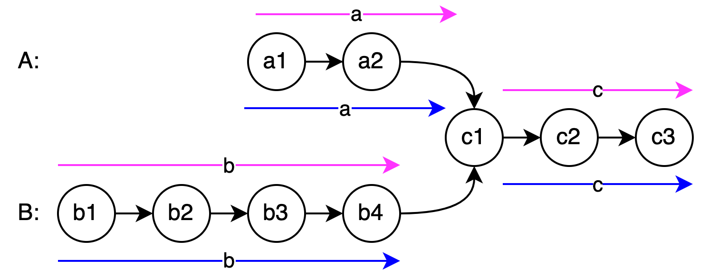
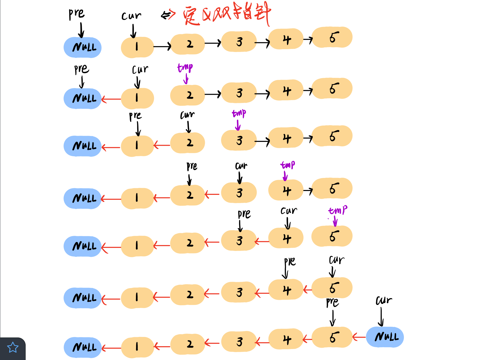

双指针
141_环形链表
题目:
给你一个链表的头节点 head ，判断链表中是否有环。如果链表中有某个节点，可以通过连续跟踪 next 指针再次到达，则链表中存在环。 为了表示给定链表中的环，评测系统内部使用整数 pos 来表示链表尾连接到链表中的位置（索引从 0 开始）。注意：pos 不作为参数进行传递 。仅仅是为了标识链表的实际情况。如果链表中存在环 ，则返回 true 。 否则，返回 false。
- 注意: while 循环的停止准则。
- 快指针与慢指针的相对速度为 1, 因此快指针不会在环中跳过慢指针。
1
2
3
4
5
6
7
8
9
10
11
12
13
14
15
16 | bool hasCycle(ListNode *head) {
if (head == nullptr || head->next == nullptr) {
return false;
}
ListNode* slow = head;
ListNode* fast = head;
while (fast && fast->next) {
slow = slow->next;
fast = fast->next->next;
if (fast == slow) {
return true;
}
}
return false;
}
|
142_环形链表II
题目: 给定一个链表的头节点 head ，返回链表开始入环的第一个节点。 如果链表无环，则返回 null。不允许修改链表。
解析:

目标: 求图中 a 的长度。
如图所示，记环外的长度为 a, 第一轮相遇的节点为紫色处。
- 慢指针走的节点数： slow = a + b
- 快指针走的节点数： fast = a + b + n*(b + c), n \geq 1
由于快指针速度是慢指针的两倍，则满足 2*slow = fast, 即
\begin{align}
2*(a+b) &= a + b + n*(b + c) \\
\Rightarrow a &= n * (b + c) - b \\
\Rightarrow a &= (n - 1) * (b + c) + c
\end{align}
当 n=1 时, 满足 a=c. 也即是说第一轮相遇后, 从头结点和当前节点到环的入口节点的长度相等。
1
2
3
4
5
6
7
8
9
10
11
12
13
14
15
16
17
18
19
20
21
22 | ListNode *detectCycle(ListNode *head) {
if (head == nullptr || head->next == nullptr) return nullptr;
ListNode* slow = head;
ListNode* fast = head;
// 第一次相遇
while (fast && fast->next) {
if (fast->next == nullptr) return nullptr;
slow = slow->next;
fast = fast->next->next;
// 第二次相遇, 单步移动
if (slow == fast) {
ListNode* p = head;
while (p != slow) {
p = p->next;
slow = slow->next;
}
return p;
}
}
return nullptr;
}
|
160_相交链表
题目: 给你两个单链表的头节点 headA 和 headB ，请你找出并返回两个单链表相交的起始节点。如果两个链表不存在相交节点，返回 null。

记 headA 到公共节点长度为 a, headB 到公共节点长度为 b, 公共节点长度为 c, 则满足
- 链表 A 的长度 lenA = a + c;
- 链表 B 的长度 lenB = b + c;
进一步地，有 lenA + b = lenB + a, 分别对应粉色路径和蓝色路径。
| ListNode *getIntersectionNode(ListNode *headA, ListNode *headB) {
ListNode *p = headA;
ListNode *q = headB;
while (p != q) {
p = p ? p->next : headB; // 注意是 headB, 不是 q
q = q ? q->next : headA; // 注意是 headA, 不是 p
}
return p;
}
|
206_反转链表
题目:给你单链表的头节点 head ，请你反转链表，并返回反转后的链表。
Hints: 需要设定两个指针, 一个 prev 指针, 一个curr 指针。 返回的的是 prev。

| ListNode* reverseList(ListNode* head) {
ListNode* prev = nullptr;
ListNode* curr = head;
while (curr) {
ListNode* tmp = curr->next;
curr->next = prev;
prev = curr;
curr = tmp;
}
return prev;
}
|
234_回文链表
题目: 给你一个单链表的头节点 head ，请你判断该链表是否为回文链表。如果是，返回 true ；否则，返回 false。
- 思路: 找到链表中间位置的节点 → 反转链表后半段 → 逐节点对比链表前半段和后半段的反转链表.
1
2
3
4
5
6
7
8
9
10
11
12
13
14
15
16
17
18
19
20
21
22
23
24
25
26
27
28
29
30
31
32
33
34
35 | ListNode* get_half_head(ListNode* head) {
ListNode* fast = head;
ListNode* slow = head;
while (fast && fast->next) {
fast = fast->next->next;
slow = slow->next;
}
return slow;
}
ListNode* reverse_list(ListNode* head) {
ListNode* prev = nullptr;
ListNode* curr = head;
while (curr) {
ListNode* tmp = curr->next;
curr->next = prev;
prev = curr;
curr = tmp;
}
return prev;
}
bool isPalindrome(ListNode* head) {
ListNode* half_head = get_half_head(head);
ListNode* reverse_half = reverse_list(half_head);
//std::cout << head->next->val << std::endl;
while (reverse_half) {
if (head->val != reverse_half->val) {
return false;
}
head = head->next;
reverse_half = reverse_half->next;
}
return true;
}
|